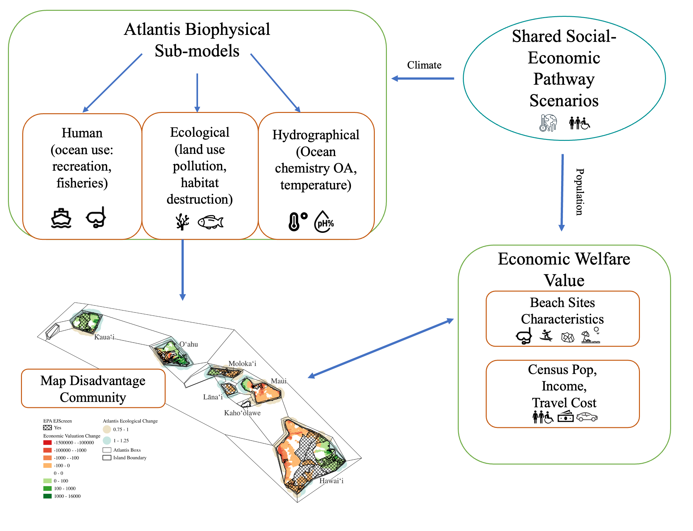

The following code will produce predicts for changes welfare based on changes in conditions for nearshore environmental quality for the main Hawaii island. The main impact estimated is from losses of coral reef biomass. This is down through to models:
An Economic Model using a random utility framework from Fezzi. et al 2023
An Atlantic Model using a biophysical model which estimates changes to ecological conditions.
The graphical representation of this process is illustrated below

Running Code
Call these libraries and the source codes from the Original Study. This will provide the coefficients from Random Utility model
Code
library(dplyr)
Attaching package: 'dplyr'
The following objects are masked from 'package:stats':
filter, lag
The following objects are masked from 'package:base':
intersect, setdiff, setequal, union
Code
library(tidyr)library(ggplot2)library(sf)
Linking to GEOS 3.11.0, GDAL 3.5.3, PROJ 9.1.0; sf_use_s2() is TRUE
Code
library(gganimate)### load functionssource("~/CR/codedata/dummier.R")source("~/CR/codedata/travel_cost.R")source("~/CR/codedata/gridplot.R")### load model ###load(file ="~/CR/codedata/model3.mod")### this are the travel cost model estimates ###m1
The following code will take the economic data collected from each island and calculate the travel cost for each grid to each location as previous estimated following Fezzi. et al 2023
Code
dist1 <-read.csv("~/codedata/dist1.csv")sites_join <-read.csv("~/codedata/sites_join.csv")x1 <-merge(dist1, sites_join)x1$coastal[x1$name =="Home"]=0### Prepared dataset for maps plot:out <- x1[order(x1$siteID),]out <- out[c(1,3,8:12)]m##using 85K because that was the survey amountout$incometran_track=out$medincome_tract/85000coasts <- sites[sites$coastal ==1& sites$name!="Home",]x1=merge(SSP1, x1, by.x ="polygon", by.y ="Box_ID_2", all.y =TRUE)x1 <- x1[order(x1$km2_ID,x1$siteID),] ## btw it is correct that the dim(x) is lower than dim(dist) because## I aggregated some siteslength(unique(x1$siteID))### FINISHED LOADING AND MERGING DATASETS ####rm(dist, pop, sitesjoin)### CALCULATE TRAVEL COST ####x1$cost <-0x1$duration[ x1$siteID ==351] <- x1$duration[ x1$siteID ==351] +40## this sites needs 40min walking to be reached## Need to also do this for Hawaii### Change here for different fuel costx1$cost <- x1$distance.meters*0.001* (0.20/1.5 ) ## fuel cost ## assumption on fuel cost:## 20 miles/gallon# $4.3/gallon# means $4.3 per 20 miles --> 0.215 $/mile# 10 km --> 6.2 miles --> $1.33 travel cost per km# 10km * 0.20 / 1.5 = $1.33 so the values coincide with the cost used above.x1$cost <- x1$cost + (x1$duration /60)*3/4*24.14## add the value of time (assuming a 25$ per hour average wage rate)x1$cost <- x1$cost *2## the value for a return trip#### put Molokini cost equal to the one of Makena Landing Beach Park + 100$ (cost of a snorkeling tour)x1$cost[x1$siteID ==388] <- x1$cost[x1$siteID ==359] +100
Atlantis Model
We will need to the outputs of biomass from Atlantis for the nearshore environment. These outputs will then be aggregated by polygon. The percentage change predict each year will provide us the unit that can be used in the Economic Model from previous section.
Base level Coral
The base level of coral is the average biomass of 2015-2020 for each near polygon.
Yearly Percent Change
Then for each time step out to 2100 we sum up the biomass of coral reef:
\(C_{pt} = \sum V_{pt} / \sum V_{pt}=0\)
The following code does this for scenario SSP1 1-3. The file required if from the Atlantis which is to large for github so please request.
For each predicted scenario from Atlantis (ssp1-3) we will need to run a loop for each time step calculating the welfare changes for each grid and recreational location.
Predict SSP1
This loop runs through each time step and calculate the compensating variation with each change in coral biomass overtime.
Code
### parametersbeta <- m3$results[,1]### Considering a transfer to Oahu:x1[is.na(x1)] <-0X0 <-cbind( x1$cost,x1$home, x1$coastal, x1$citypark, x1$trailall, x1$haleakala, x1$molokini, x1$parking, x1$showers, x1$lifeguard, x1$rock, x1$manmade, x1$beachmedium, x1$beachlarge, x1$surf, x1$swim, x1$snork, x1$res_fish_bio, x1$PNAS, x1$playground, x1$sports, x1$snork*x1$PNAS, x1$snork*x1$res_fish_bio)X0[is.na(X0)] <-0xsim <- x1final <-data.frame(matrix(ncol =2, nrow =0))all <-data.frame(matrix(ncol =2, nrow =0))#colnames(final) <- c("time10", "time20" , "time30" , "time40")#this needs to be ran as a loopfor (i in2:82) { xsim <- x1 xsim$PNAS <- xsim$PNAS *xsim[,i] xsim$PNAS[xsim$PNAS <=0] <-0 X1 <-cbind( xsim$cost,xsim$home, xsim$coastal, xsim$citypark, xsim$trailall, xsim$haleakala, xsim$molokini, xsim$parking, xsim$showers, xsim$lifeguard, xsim$rock, xsim$manmade, xsim$beachmedium, xsim$beachlarge, xsim$surf, xsim$swim, xsim$snork, xsim$res_fish_bio, xsim$PNAS, xsim$playground, xsim$sports, xsim$snork*xsim$PNAS, xsim$snork*xsim$res_fish_bio) X1[is.na(X1)] <-0### CALCULATION OF WTP FOR EACH GRID LOCATION wtpw <-quality.change(beta = beta, ### parametersX0=X0, ### X variables in the baselineX1 = X1, #### X variables in the scenariopid = x1$km2_ID, ### ID of the 1km gridcost =1) ### column of the cost parameter in the X matrix### TOTAL WTP b=merge(wtpw,out, by.x=c("id"),by.y=c("km2_ID")) b$time=i a=b %>%group_by(island) %>%summarize(SSP1_block=sum(WTP * incometran_track*grid_km_censusblock_Pop18_densityKM *365) ) a$time=i all=rbind(b,all) final=rbind(a,final)}df=finalall_df=allcolnames(all_df)[2]="SSP1"
Predict SSP2
Code
####This is for SSP2x1 <-merge(dist1, sites_join)x1$coastal[x1$name =="Home"]=0x1=merge(SSP2, x1, by.x ="polygon", by.y ="Box_ID_2", all.y =TRUE)x1 <- x1[order(x1$km2_ID,x1$siteID),] ## btw it is correct that the dim(x) is lower than dim(dist) because## I aggregated some siteslength(unique(x1$siteID))### FINISHED LOADING AND MERGING DATASETS ####rm(dist, pop, sitesjoin)### CALCULATE TRAVEL COST ####x1$cost <-0x1$duration[ x1$siteID ==351] <- x1$duration[ x1$siteID ==351] +40## this sites needs 40min walking to be reached## Need to also do this for Hawaii### Change here for different fuel costx1$cost <- x1$distance.meters*0.001* (0.20/1.5 ) ## fuel cost ## assumption on fuel cost:## 20 miles/gallon# $4.3/gallon# means $4.3 per 20 miles --> 0.215 $/mile# 10 km --> 6.2 miles --> $1.33 travel cost per km# 10km * 0.20 / 1.5 = $1.33 so the values coincide with the cost used above.x1$cost <- x1$cost + (x1$duration /60)*3/4*24.14## add the value of time (assuming a 25$ per hour average wage rate)x1$cost <- x1$cost *2## the value for a return trip#### put Molokini cost equal to the one of Makena Landing Beach Park + 100$ (cost of a snorkeling tour)x1$cost[x1$siteID ==388] <- x1$cost[x1$siteID ==359] +100### PREPARE DATA FOR PREDICTIONS ### parametersbeta <- m3$results[,1]### Considering a transfer to Oahu:x1[is.na(x1)] <-0X0 <-cbind( x1$cost,x1$home, x1$coastal, x1$citypark, x1$trailall, x1$haleakala, x1$molokini, x1$parking, x1$showers, x1$lifeguard, x1$rock, x1$manmade, x1$beachmedium, x1$beachlarge, x1$surf, x1$swim, x1$snork, x1$res_fish_bio, x1$PNAS, x1$playground, x1$sports, x1$snork*x1$PNAS, x1$snork*x1$res_fish_bio)X0[is.na(X0)] <-0xsim <- x1final <-data.frame(matrix(ncol =2, nrow =0))all <-data.frame(matrix(ncol =2, nrow =0))#colnames(final) <- c("time10", "time20" , "time30" , "time40")#this needs to be ran as a loopfor (i in2:83) { xsim <- x1 xsim$PNAS <- xsim$PNAS *xsim[,i] xsim$PNAS[xsim$PNAS <=0] <-0 X1 <-cbind( xsim$cost,xsim$home, xsim$coastal, xsim$citypark, xsim$trailall, xsim$haleakala, xsim$molokini, xsim$parking, xsim$showers, xsim$lifeguard, xsim$rock, xsim$manmade, xsim$beachmedium, xsim$beachlarge, xsim$surf, xsim$swim, xsim$snork, xsim$res_fish_bio, xsim$PNAS, xsim$playground, xsim$sports, xsim$snork*xsim$PNAS, xsim$snork*xsim$res_fish_bio) X1[is.na(X1)] <-0### CALCULATION OF WTP FOR EACH GRID LOCATION wtpw <-quality.change(beta = beta, ### parametersX0=X0, ### X variables in the baselineX1 = X1, #### X variables in the scenariopid = x1$km2_ID, ### ID of the 1km gridcost =1) ### column of the cost parameter in the X matrix### TOTAL WTP b=merge(wtpw,out, by.x=c("id"),by.y=c("km2_ID")) b$time=i a=b %>%group_by(island) %>%summarize(SSP2_block=sum(WTP * incometran_track*grid_km_censusblock_Pop18_densityKM *365) ) a$time=i all=rbind(b,all) final=rbind(a,final)}df=merge(df,final, all.x =TRUE)colnames(all)[2]="SSP2"all_df=merge(all_df, all, all.x =TRUE)
Predict SSP3
Code
####This is for SSP3x1 <-merge(dist1, sites_join)x1$coastal[x1$name =="Home"]=0x1=merge(SSP3, x1, by.x ="polygon", by.y ="Box_ID_2", all.y =TRUE)x1 <- x1[order(x1$km2_ID,x1$siteID),] ## btw it is correct that the dim(x) is lower than dim(dist) because## I aggregated some siteslength(unique(x1$siteID))### FINISHED LOADING AND MERGING DATASETS ###### CALCULATE TRAVEL COST ####x1$cost <-0x1$duration[ x1$siteID ==351] <- x1$duration[ x1$siteID ==351] +40## this sites needs 40min walking to be reached## Need to also do this for Hawaii### Change here for different fuel costx1$cost <- x1$distance.meters*0.001* (0.20/1.5 ) ## fuel cost ## assumption on fuel cost:## 20 miles/gallon# $4.3/gallon# means $4.3 per 20 miles --> 0.215 $/mile# 10 km --> 6.2 miles --> $1.33 travel cost per km# 10km * 0.20 / 1.5 = $1.33 so the values coincide with the cost used above.x1$cost <- x1$cost + (x1$duration /60)*3/4*24.14## add the value of time (assuming a 25$ per hour average wage rate)x1$cost <- x1$cost *2## the value for a return trip#### put Molokini cost equal to the one of Makena Landing Beach Park + 100$ (cost of a snorkeling tour)x1$cost[x1$siteID ==388] <- x1$cost[x1$siteID ==359] +100### PREPARE DATA FOR PREDICTIONS ### parametersbeta <- m3$results[,1]### Considering a transfer to Oahu:x1[is.na(x1)] <-0X0 <-cbind( x1$cost,x1$home, x1$coastal, x1$citypark, x1$trailall, x1$haleakala, x1$molokini, x1$parking, x1$showers, x1$lifeguard, x1$rock, x1$manmade, x1$beachmedium, x1$beachlarge, x1$surf, x1$swim, x1$snork, x1$res_fish_bio, x1$PNAS, x1$playground, x1$sports, x1$snork*x1$PNAS, x1$snork*x1$res_fish_bio)X0[is.na(X0)] <-0xsim <- x1final <-data.frame(matrix(ncol =2, nrow =0))all <-data.frame(matrix(ncol =2, nrow =0))#colnames(final) <- c("time10", "time20" , "time30" , "time40")#this needs to be ran as a loopfor (i in2:83) { xsim <- x1 xsim$PNAS <- xsim$PNAS *xsim[,i] xsim$PNAS[xsim$PNAS <=0] <-0 X1 <-cbind( xsim$cost,xsim$home, xsim$coastal, xsim$citypark, xsim$trailall, xsim$haleakala, xsim$molokini, xsim$parking, xsim$showers, xsim$lifeguard, xsim$rock, xsim$manmade, xsim$beachmedium, xsim$beachlarge, xsim$surf, xsim$swim, xsim$snork, xsim$res_fish_bio, xsim$PNAS, xsim$playground, xsim$sports, xsim$snork*xsim$PNAS, xsim$snork*xsim$res_fish_bio) X1[is.na(X1)] <-0### CALCULATION OF WTP FOR EACH GRID LOCATION wtpw <-quality.change(beta = beta, ### parametersX0=X0, ### X variables in the baselineX1 = X1, #### X variables in the scenariopid = x1$km2_ID, ### ID of the 1km gridcost =1) ### column of the cost parameter in the X matrix### TOTAL WTP b=merge(wtpw,out, by.x=c("id"),by.y=c("km2_ID")) b$time=i a=b %>%group_by(island) %>%summarize(SSP3_block=sum(WTP * incometran_track*grid_km_censusblock_Pop18_densityKM *365) ) a$time=i all=rbind(b,all) final=rbind(a,final)}df=merge(df,final, all.x =TRUE)colnames(all)[2]="SSP3"all_df=merge(all_df, all, all.x =TRUE)
Data Aggregation
Two datasets were created in the prediction modeling.
Aggregated Totals by population and income weighted by Island Each Year
For the aggregated totals by island, this snipet will produce the projected table of total welfare loss using the circular A-4 discounting rate and a pluralistic discounting rate. We also incorporate the projected population growth under SSP1-SSP3 for the state of Hawaii.
The raw welfare estimates are not weighted by income or population. The next code snippet will calculate the the total WTP by income track and population density. This dataset could be of interest if you want to show how the welfare changes overtime.
For our paper, I took the snippets of the welfare and coral measurements from the years 2030, 2050 and 2100 and then improved the visuals I used qgis.
Here I have taken a snap shot of each year we will look at 2020, 2050, 2075 and 2100. Then map out each of the welfare of each km squared for each person.
Code
# Define the cutpoints for 7 intervalsall_df <-read_csv("~/CR/codedata/all_grids.csv")%>%select(-starts_with("..."))all_df <- all_df %>%mutate(SSP1_WTP_bin =case_when( SSP1_TotalWTP <=-1e6~" -1M", SSP1_TotalWTP <=-1e5~"-1M to -100K", SSP1_TotalWTP <=-1e3~"-100K to -1K", SSP1_TotalWTP <=-100~"-1K to -100", SSP1_TotalWTP <0~"-100 to 0", SSP1_TotalWTP ==0~"0", SSP1_TotalWTP <=100~"0 to 100", SSP1_TotalWTP <=1e3~"100 to 1K", SSP1_TotalWTP <=1e4~"1K to 10K",TRUE~"> 10K" ))all_df <- all_df %>%mutate(SSP2_WTP_bin =case_when( SSP2_TotalWTP <=-1e6~" -1M", SSP2_TotalWTP <=-1e5~"-1M to -100K", SSP2_TotalWTP <=-1e3~"-100K to -1K", SSP2_TotalWTP <=-100~"-1K to -100", SSP2_TotalWTP <0~"-100 to 0", SSP2_TotalWTP ==0~"0", SSP2_TotalWTP <=100~"0 to 100", SSP2_TotalWTP <=1e3~"100 to 1K", SSP2_TotalWTP <=1e4~"1K to 10K",TRUE~"> 10K" ))all_df <- all_df %>%mutate(SSP3_WTP_bin =case_when( SSP3_TotalWTP <=-1e6~" -1M", SSP3_TotalWTP <=-1e5~"-1M to -100K", SSP3_TotalWTP <=-1e3~"-100K to -1K", SSP3_TotalWTP <=-100~"-1K to -100", SSP3_TotalWTP <0~"-100 to 0", SSP3_TotalWTP ==0~"0", SSP3_TotalWTP <=100~"0 to 100", SSP3_TotalWTP <=1e3~"100 to 1K", SSP3_TotalWTP <=1e4~"1K to 10K",TRUE~"> 10K" ))color_palette <-c(" -1M"="darkred","-1M to -100K"="brown","-100K to -1K"="lightcoral","-1K to -100"="pink","-100 to 0"="mistyrose","0"="white","0 to 100"="greenyellow","100 to 1K"="limegreen","> 10K"="darkgreen")all_df$SSP1_WTP_bin <-factor( all_df$SSP1_WTP_bin,levels =names(color_palette))all_df$SSP2_WTP_bin <-factor( all_df$SSP2_WTP_bin,levels =names(color_palette))all_df$SSP2_WTP_bin <-factor( all_df$SSP2_WTP_bin,levels =names(color_palette))# Then plot:ggplot(all_df %>%filter(Year %in%c(2020, 2050, 2075, 2100)),aes(x = longitude, y = latitude, color = SSP1_WTP_bin)) +geom_point(size =0.5, alpha =1) +geom_sf(data = hawaii_counties,fill =NA,color ="black",size =0.4,inherit.aes =FALSE ) +coord_sf(xlim =c(-161, -154), ylim =c(18.5, 22.5)) +scale_color_manual(values = color_palette,name ="Total WTP",drop =FALSE,limits =names(color_palette) ) +facet_wrap(vars(Year), ncol =2) +theme_light()
Animation Welfare
These produce animations of changes in annual welfare to the year 2100
The code chunk runs the animation and saves the file.
The Markdown line right after brings the GIF into the rendered output.
Make sure the GIF file path is correct relative to the document, or specify the path if needed.
---title: "The economic impact of climate change on coral reef in the Main Hawaiian Islands"author: "Ashley Lowe Mackenzie et. al"format: html: code-fold: true # Enables dropdown for code code-tools: true # (Optional) Adds buttons like "Show Code" code-summary: "Show code" # (Optional) Custom label for dropdown toc: true toc-location: left page-layout: fulleditor: visual---# Coral Reef HawaiiThe following code will produce predicts for changes welfare based on changes in conditions for nearshore environmental quality for the main Hawaii island. The main impact estimated is from losses of coral reef biomass. This is down through to models:1. An Economic Model using a random utility framework from [Fezzi. et al 2023](https://doi.org/10.1016/j.ecolecon.2022.107628)2. An Atlantic Model using a biophysical model which estimates changes to ecological conditions.The graphical representation of this process is illustrated below## Running CodeCall these libraries and the source codes from the Original Study. This will provide the coefficients from Random Utility model```{r warning=FALSE}library(dplyr)library(tidyr)library(ggplot2)library(sf)library(gganimate)### load functionssource("~/CR/codedata/dummier.R")source("~/CR/codedata/travel_cost.R")source("~/CR/codedata/gridplot.R")### load model ###load(file ="~/CR/codedata/model3.mod")### this are the travel cost model estimates ###m1```## Travel CostThe following code will take the economic data collected from each island and calculate the travel cost for each grid to each location as previous estimated following Fezzi. et al 2023```{r eval=FALSE}dist1 <-read.csv("~/codedata/dist1.csv")sites_join <-read.csv("~/codedata/sites_join.csv")x1 <-merge(dist1, sites_join)x1$coastal[x1$name =="Home"]=0### Prepared dataset for maps plot:out <- x1[order(x1$siteID),]out <- out[c(1,3,8:12)]m##using 85K because that was the survey amountout$incometran_track=out$medincome_tract/85000coasts <- sites[sites$coastal ==1& sites$name!="Home",]x1=merge(SSP1, x1, by.x ="polygon", by.y ="Box_ID_2", all.y =TRUE)x1 <- x1[order(x1$km2_ID,x1$siteID),] ## btw it is correct that the dim(x) is lower than dim(dist) because## I aggregated some siteslength(unique(x1$siteID))### FINISHED LOADING AND MERGING DATASETS ####rm(dist, pop, sitesjoin)### CALCULATE TRAVEL COST ####x1$cost <-0x1$duration[ x1$siteID ==351] <- x1$duration[ x1$siteID ==351] +40## this sites needs 40min walking to be reached## Need to also do this for Hawaii### Change here for different fuel costx1$cost <- x1$distance.meters*0.001* (0.20/1.5 ) ## fuel cost ## assumption on fuel cost:## 20 miles/gallon# $4.3/gallon# means $4.3 per 20 miles --> 0.215 $/mile# 10 km --> 6.2 miles --> $1.33 travel cost per km# 10km * 0.20 / 1.5 = $1.33 so the values coincide with the cost used above.x1$cost <- x1$cost + (x1$duration /60)*3/4*24.14## add the value of time (assuming a 25$ per hour average wage rate)x1$cost <- x1$cost *2## the value for a return trip#### put Molokini cost equal to the one of Makena Landing Beach Park + 100$ (cost of a snorkeling tour)x1$cost[x1$siteID ==388] <- x1$cost[x1$siteID ==359] +100```## Atlantis ModelWe will need to the outputs of biomass from Atlantis for the nearshore environment. These outputs will then be aggregated by polygon. The percentage change predict each year will provide us the unit that can be used in the Economic Model from previous section.### Base level CoralThe base level of coral is the average biomass of 2015-2020 for each near polygon.### Yearly Percent ChangeThen for each time step out to 2100 we sum up the biomass of coral reef:$C_{pt} = \sum V_{pt} / \sum V_{pt}=0$The following code does this for scenario SSP1 1-3. The file required if from the Atlantis which is to large for github so please request.```{r eval=FALSE}library(dplyr)library(tidyr)###This grabs Atlantis and gets it into the write stepsSSP3_loPPkF <-readRDS("~/codedata/SSP3_control_last.rds")biomass_spatial_stanza=SSP3_loPPkF$biomass_spatial_stanzassp3_coral=subset(biomass_spatial_stanza,species=="Pocillopora"|species=="Porites branching"|species=="Porites massive"|species=="Montipora"|species=="Leptoseris")ssp3_coral$time=round(ssp3_coral$time, digits =0)ssp3_coral=ssp3_coral %>%distinct(time, polygon, species, .keep_all =TRUE)ssp3_coral=ssp3_coral %>%group_by(polygon, time) %>%summarize(Coral_NearShore=sum(atoutput))ssp3_coral=ssp3_coral[ssp3_coral$polygon %in% keep, ]ssp3_coral=ssp3_coral %>%filter(!(time %%1))ssp3_coral[order(ssp3_coral$time),]ssp3_coral=ssp3_coral %>%filter(!(time <=9))t=ssp3_coral %>%filter(time<=14)%>%group_by(polygon) %>%summarise(mean=mean(Coral_NearShore))ssp3_coral=ssp3_coral %>%filter(!(time <=13))ssp3_coral=merge(t,ssp3_coral)percentchangeSSP3=ssp3_coral %>%group_by(polygon) %>%mutate(Coral_perchange = Coral_NearShore/mean)percentchangeSSP3=percentchangeSSP3[c(1,3,5)]percentchangeSSP3$time<-sub("^", "time", percentchangeSSP3$time )SSP3=spread(percentchangeSSP3, time, Coral_perchange)SSP1_loPPkF <-readRDS("~/codedata/SSP1_control_last.rds")biomass_spatial_stanza=SSP1_loPPkF$biomass_spatial_stanzassp1_coral=subset(biomass_spatial_stanza,species=="Pocillopora"|species=="Porites branching"|species=="Porites massive"|species=="Montipora"|species=="Leptoseris")ssp1_coral=ssp1_coral %>%group_by(polygon, time) %>%summarize(Coral_NearShore=sum(atoutput))ssp1_coral=ssp1_coral[ssp1_coral$polygon %in% keep, ]ssp1_coral=ssp1_coral %>%filter(!(time %%1))ssp1_coral[order(ssp1_coral$time),]ssp1_coral=ssp1_coral %>%filter(!(time <=9))t=ssp1_coral %>%filter(time<=14)%>%group_by(polygon) %>%summarise(mean=mean(Coral_NearShore))ssp1_coral=ssp1_coral %>%filter(!(time <=13))ssp1_coral=merge(t,ssp1_coral)percentchangeSSP1=ssp1_coral %>%group_by(polygon) %>%mutate(Coral_perchange = Coral_NearShore/mean)percentchangeSSP1=percentchangeSSP1[c(1,3,5)]percentchangeSSP1$time<-sub("^", "time", percentchangeSSP1$time )SSP1=spread(percentchangeSSP1, time, Coral_perchange)SSP2_loPPkF <-readRDS("~/codedata/SSP2_control_last.rds")biomass_spatial_stanza=SSP2_loPPkF$biomass_spatial_stanzassp2_coral=subset(biomass_spatial_stanza,species=="Pocillopora"|species=="Porites branching"|species=="Porites massive"|species=="Montipora"|species=="Leptoseris"| species=="crustose coralline algae")ssp2_coral=ssp2_coral %>%group_by(polygon, time) %>%summarize(Coral_NearShore=sum(atoutput))ssp2_coral=ssp2_coral[ssp2_coral$polygon %in% keep, ]ssp2_coral=ssp2_coral %>%filter(!(time %%1))ssp2_coral[order(ssp2_coral$time),]ssp2_coral=ssp2_coral %>%filter(!(time <=9))t=ssp2_coral %>%filter(time<=14)%>%group_by(polygon) %>%summarise(mean=mean(Coral_NearShore))ssp2_coral=ssp2_coral %>%filter(!(time <=13))ssp2_coral=merge(t,ssp2_coral)percentchangeSSP2=ssp2_coral %>%group_by(polygon) %>%mutate(Coral_perchange = Coral_NearShore/mean)percentchangeSSP2=percentchangeSSP2[c(1,3,5)]percentchangeSSP2$time<-sub("^", "time", percentchangeSSP2$time )SSP2=spread(percentchangeSSP2, time, Coral_perchange)```## Prediction ModelFor each predicted scenario from Atlantis (ssp1-3) we will need to run a loop for each time step calculating the welfare changes for each grid and recreational location.### Predict SSP1This loop runs through each time step and calculate the compensating variation with each change in coral biomass overtime.```{r eval=FALSE}### parametersbeta <- m3$results[,1]### Considering a transfer to Oahu:x1[is.na(x1)] <-0X0 <-cbind( x1$cost,x1$home, x1$coastal, x1$citypark, x1$trailall, x1$haleakala, x1$molokini, x1$parking, x1$showers, x1$lifeguard, x1$rock, x1$manmade, x1$beachmedium, x1$beachlarge, x1$surf, x1$swim, x1$snork, x1$res_fish_bio, x1$PNAS, x1$playground, x1$sports, x1$snork*x1$PNAS, x1$snork*x1$res_fish_bio)X0[is.na(X0)] <-0xsim <- x1final <-data.frame(matrix(ncol =2, nrow =0))all <-data.frame(matrix(ncol =2, nrow =0))#colnames(final) <- c("time10", "time20" , "time30" , "time40")#this needs to be ran as a loopfor (i in2:82) { xsim <- x1 xsim$PNAS <- xsim$PNAS *xsim[,i] xsim$PNAS[xsim$PNAS <=0] <-0 X1 <-cbind( xsim$cost,xsim$home, xsim$coastal, xsim$citypark, xsim$trailall, xsim$haleakala, xsim$molokini, xsim$parking, xsim$showers, xsim$lifeguard, xsim$rock, xsim$manmade, xsim$beachmedium, xsim$beachlarge, xsim$surf, xsim$swim, xsim$snork, xsim$res_fish_bio, xsim$PNAS, xsim$playground, xsim$sports, xsim$snork*xsim$PNAS, xsim$snork*xsim$res_fish_bio) X1[is.na(X1)] <-0### CALCULATION OF WTP FOR EACH GRID LOCATION wtpw <-quality.change(beta = beta, ### parametersX0=X0, ### X variables in the baselineX1 = X1, #### X variables in the scenariopid = x1$km2_ID, ### ID of the 1km gridcost =1) ### column of the cost parameter in the X matrix### TOTAL WTP b=merge(wtpw,out, by.x=c("id"),by.y=c("km2_ID")) b$time=i a=b %>%group_by(island) %>%summarize(SSP1_block=sum(WTP * incometran_track*grid_km_censusblock_Pop18_densityKM *365) ) a$time=i all=rbind(b,all) final=rbind(a,final)}df=finalall_df=allcolnames(all_df)[2]="SSP1"```### Predict SSP2```{r eval=FALSE}####This is for SSP2x1 <-merge(dist1, sites_join)x1$coastal[x1$name =="Home"]=0x1=merge(SSP2, x1, by.x ="polygon", by.y ="Box_ID_2", all.y =TRUE)x1 <- x1[order(x1$km2_ID,x1$siteID),] ## btw it is correct that the dim(x) is lower than dim(dist) because## I aggregated some siteslength(unique(x1$siteID))### FINISHED LOADING AND MERGING DATASETS ####rm(dist, pop, sitesjoin)### CALCULATE TRAVEL COST ####x1$cost <-0x1$duration[ x1$siteID ==351] <- x1$duration[ x1$siteID ==351] +40## this sites needs 40min walking to be reached## Need to also do this for Hawaii### Change here for different fuel costx1$cost <- x1$distance.meters*0.001* (0.20/1.5 ) ## fuel cost ## assumption on fuel cost:## 20 miles/gallon# $4.3/gallon# means $4.3 per 20 miles --> 0.215 $/mile# 10 km --> 6.2 miles --> $1.33 travel cost per km# 10km * 0.20 / 1.5 = $1.33 so the values coincide with the cost used above.x1$cost <- x1$cost + (x1$duration /60)*3/4*24.14## add the value of time (assuming a 25$ per hour average wage rate)x1$cost <- x1$cost *2## the value for a return trip#### put Molokini cost equal to the one of Makena Landing Beach Park + 100$ (cost of a snorkeling tour)x1$cost[x1$siteID ==388] <- x1$cost[x1$siteID ==359] +100### PREPARE DATA FOR PREDICTIONS ### parametersbeta <- m3$results[,1]### Considering a transfer to Oahu:x1[is.na(x1)] <-0X0 <-cbind( x1$cost,x1$home, x1$coastal, x1$citypark, x1$trailall, x1$haleakala, x1$molokini, x1$parking, x1$showers, x1$lifeguard, x1$rock, x1$manmade, x1$beachmedium, x1$beachlarge, x1$surf, x1$swim, x1$snork, x1$res_fish_bio, x1$PNAS, x1$playground, x1$sports, x1$snork*x1$PNAS, x1$snork*x1$res_fish_bio)X0[is.na(X0)] <-0xsim <- x1final <-data.frame(matrix(ncol =2, nrow =0))all <-data.frame(matrix(ncol =2, nrow =0))#colnames(final) <- c("time10", "time20" , "time30" , "time40")#this needs to be ran as a loopfor (i in2:83) { xsim <- x1 xsim$PNAS <- xsim$PNAS *xsim[,i] xsim$PNAS[xsim$PNAS <=0] <-0 X1 <-cbind( xsim$cost,xsim$home, xsim$coastal, xsim$citypark, xsim$trailall, xsim$haleakala, xsim$molokini, xsim$parking, xsim$showers, xsim$lifeguard, xsim$rock, xsim$manmade, xsim$beachmedium, xsim$beachlarge, xsim$surf, xsim$swim, xsim$snork, xsim$res_fish_bio, xsim$PNAS, xsim$playground, xsim$sports, xsim$snork*xsim$PNAS, xsim$snork*xsim$res_fish_bio) X1[is.na(X1)] <-0### CALCULATION OF WTP FOR EACH GRID LOCATION wtpw <-quality.change(beta = beta, ### parametersX0=X0, ### X variables in the baselineX1 = X1, #### X variables in the scenariopid = x1$km2_ID, ### ID of the 1km gridcost =1) ### column of the cost parameter in the X matrix### TOTAL WTP b=merge(wtpw,out, by.x=c("id"),by.y=c("km2_ID")) b$time=i a=b %>%group_by(island) %>%summarize(SSP2_block=sum(WTP * incometran_track*grid_km_censusblock_Pop18_densityKM *365) ) a$time=i all=rbind(b,all) final=rbind(a,final)}df=merge(df,final, all.x =TRUE)colnames(all)[2]="SSP2"all_df=merge(all_df, all, all.x =TRUE)```### Predict SSP3```{r eval=FALSE}####This is for SSP3x1 <-merge(dist1, sites_join)x1$coastal[x1$name =="Home"]=0x1=merge(SSP3, x1, by.x ="polygon", by.y ="Box_ID_2", all.y =TRUE)x1 <- x1[order(x1$km2_ID,x1$siteID),] ## btw it is correct that the dim(x) is lower than dim(dist) because## I aggregated some siteslength(unique(x1$siteID))### FINISHED LOADING AND MERGING DATASETS ###### CALCULATE TRAVEL COST ####x1$cost <-0x1$duration[ x1$siteID ==351] <- x1$duration[ x1$siteID ==351] +40## this sites needs 40min walking to be reached## Need to also do this for Hawaii### Change here for different fuel costx1$cost <- x1$distance.meters*0.001* (0.20/1.5 ) ## fuel cost ## assumption on fuel cost:## 20 miles/gallon# $4.3/gallon# means $4.3 per 20 miles --> 0.215 $/mile# 10 km --> 6.2 miles --> $1.33 travel cost per km# 10km * 0.20 / 1.5 = $1.33 so the values coincide with the cost used above.x1$cost <- x1$cost + (x1$duration /60)*3/4*24.14## add the value of time (assuming a 25$ per hour average wage rate)x1$cost <- x1$cost *2## the value for a return trip#### put Molokini cost equal to the one of Makena Landing Beach Park + 100$ (cost of a snorkeling tour)x1$cost[x1$siteID ==388] <- x1$cost[x1$siteID ==359] +100### PREPARE DATA FOR PREDICTIONS ### parametersbeta <- m3$results[,1]### Considering a transfer to Oahu:x1[is.na(x1)] <-0X0 <-cbind( x1$cost,x1$home, x1$coastal, x1$citypark, x1$trailall, x1$haleakala, x1$molokini, x1$parking, x1$showers, x1$lifeguard, x1$rock, x1$manmade, x1$beachmedium, x1$beachlarge, x1$surf, x1$swim, x1$snork, x1$res_fish_bio, x1$PNAS, x1$playground, x1$sports, x1$snork*x1$PNAS, x1$snork*x1$res_fish_bio)X0[is.na(X0)] <-0xsim <- x1final <-data.frame(matrix(ncol =2, nrow =0))all <-data.frame(matrix(ncol =2, nrow =0))#colnames(final) <- c("time10", "time20" , "time30" , "time40")#this needs to be ran as a loopfor (i in2:83) { xsim <- x1 xsim$PNAS <- xsim$PNAS *xsim[,i] xsim$PNAS[xsim$PNAS <=0] <-0 X1 <-cbind( xsim$cost,xsim$home, xsim$coastal, xsim$citypark, xsim$trailall, xsim$haleakala, xsim$molokini, xsim$parking, xsim$showers, xsim$lifeguard, xsim$rock, xsim$manmade, xsim$beachmedium, xsim$beachlarge, xsim$surf, xsim$swim, xsim$snork, xsim$res_fish_bio, xsim$PNAS, xsim$playground, xsim$sports, xsim$snork*xsim$PNAS, xsim$snork*xsim$res_fish_bio) X1[is.na(X1)] <-0### CALCULATION OF WTP FOR EACH GRID LOCATION wtpw <-quality.change(beta = beta, ### parametersX0=X0, ### X variables in the baselineX1 = X1, #### X variables in the scenariopid = x1$km2_ID, ### ID of the 1km gridcost =1) ### column of the cost parameter in the X matrix### TOTAL WTP b=merge(wtpw,out, by.x=c("id"),by.y=c("km2_ID")) b$time=i a=b %>%group_by(island) %>%summarize(SSP3_block=sum(WTP * incometran_track*grid_km_censusblock_Pop18_densityKM *365) ) a$time=i all=rbind(b,all) final=rbind(a,final)}df=merge(df,final, all.x =TRUE)colnames(all)[2]="SSP3"all_df=merge(all_df, all, all.x =TRUE)```## Data AggregationTwo datasets were created in the prediction modeling.1. Aggregated Totals by population and income weighted by Island Each Year2. Raw Welfare Predictions per KM Grid```{r eval=FALSE}all_df$SSP1_TotalWTP=(all_df$SSP1*all_df$incometran_track*all_df$grid_km_censusblock_Pop18_densityKM *365) all_df$SSP2_TotalWTP=(all_df$SSP2*all_df$incometran_track*all_df$grid_km_censusblock_Pop18_densityKM *365) all_df$SSP3_TotalWTP=(all_df$SSP3*all_df$incometran_track*all_df$grid_km_censusblock_Pop18_densityKM *365) wtpssp1_total=all_df %>%filter(Year==2030| Year==2050| Year==2100)df_long <- wtpssp1_total %>%pivot_longer(cols =starts_with("SSP"),names_to ="SSP_Var",values_to ="Value")# Step 2: Create wide column names with Year infodf_long <- df_long %>%mutate(column_name =paste0("year_", Year, "_", SSP_Var))# Step 3: Pivot wider using those column namesdf_wide <- df_long %>%select(id, column_name, Value) %>%pivot_wider(names_from = column_name, values_from = Value)write.csv(df_wide, file="allssps_islands.csv")coral=SSP1[c(1,12,32,82)]colnames(coral)[2]="SSP1_2030"colnames(coral)[3]="SSP1_2050"colnames(coral)[4]="SSP1_2100"coral1=SSP2[c(1,12,32,82)]colnames(coral1)[2]="SSP2_2030"colnames(coral1)[3]="SSP2_2050"colnames(coral1)[4]="SSP2_2100"coral=merge(coral,coral1)coral1=SSP3[c(1,12,32,82)]colnames(coral1)[2]="SSP3_2030"colnames(coral1)[3]="SSP3_2050"colnames(coral1)[4]="SSP3_2100"coral=merge(coral,coral1)write.csv(coral, file="coral_new.csv")df1=gather(df, condition, wtp, SSP1_block:SSP3_block, factor_key=TRUE)df1$condition=gsub("_block", "", df1$condition)df1$island=gsub("Kauai", "Kauai", df1$island)df1$island=gsub("Molokai", "Molokai", df1$island)df1$island=gsub("Oahu", "Oahu", df1$island)df1$island=gsub("Hawaii", "Hawaii", df1$island)df1$island=gsub("Lanai", "Lnai", df1$island)write.csv(df1, file="allssps_islands.csv")```### Across Island aggregationFor the aggregated totals by island, this snipet will produce the projected table of total welfare loss using the circular A-4 discounting rate and a pluralistic discounting rate. We also incorporate the projected population growth under SSP1-SSP3 for the state of Hawaii.```{r eval=FALSE}library(readxl)allssps_islands <-read_csv("~/CR/codedata/allssps_islands.csv") %>%select(-starts_with("..."))allssps_islandspop <-read_excel("allssps_islands.xlsx",sheet ="pop")allssps_islandspop=gather(allssps_islandspop, condition, pop, SSP1:SSP3, factor_key=TRUE)allssps_islands=merge(allssps_islands,allssps_islandspop)allssps_islands$NPV=0allssps_islands$NPV[which(allssps_islands$Year>2020)]=.02allssps_islands$NPV[which(allssps_islands$Year>2079)]=.019allssps_islands$NPV[which(allssps_islands$Year>2094)]=.018allssps_islands$time_step <- allssps_islands$Year -2020allssps_islands$NPV_WTP=allssps_islands$wtp/(1+allssps_islands$NPV)^allssps_islands$time_stepallssps_islands$NPV_WTP_Pop=(allssps_islands$wtp*allssps_islands$pop)/(1+allssps_islands$NPV)^allssps_islands$time_stepallssps_islands$NPV_WTP_pluristic=(allssps_islands$wtp*allssps_islands$pop*.4)/(1+0)^allssps_islands$time_step+(allssps_islands$wtp*allssps_islands$pop*.1)/(1)^allssps_islands$time_step+(allssps_islands$wtp*allssps_islands$pop*.3)/(1+.03)^allssps_islands$time_step+(allssps_islands$wtp*allssps_islands$pop*.2)/(1+.1)^allssps_islands$time_stepallssps_islands$NPV_WTP_pluristic2=(allssps_islands$wtp*allssps_islands$pop*.4)/(1+-.01)^allssps_islands$time_step+(allssps_islands$wtp*allssps_islands$pop*.1)/(1)^allssps_islands$time_step+(allssps_islands$wtp*allssps_islands$pop*.3)/(1+.01)^allssps_islands$time_step+(allssps_islands$wtp*allssps_islands$pop*.2)/(1+.5)^allssps_islands$time_stepallssps_islands$NPV_WTP_Lane=(allssps_islands$wtp*allssps_islands$pop)/(1+.03)^allssps_islands$time_stepallssps_islands$NPV_WTP_pluristic2=allssps_islands$NPV_WTP_pluristic2/1000allssps_islands$NPV_WTP_Lane=allssps_islands$NPV_WTP_Lane/1000allssps_islands$NPV_WTP_pluristic=allssps_islands$NPV_WTP_pluristic/1000allssps_islands$NPV_WTP=allssps_islands$NPV_WTP/1000allssps_islands$NPV_WTP_Pop=allssps_islands$NPV_WTP_Pop/1000colnames(allssps_islands)[3]="SSP Scenario"ggplot(allssps_islands, aes(x = Year)) +geom_line(aes(y = NPV_WTP_Pop, color =`SSP Scenario`, group =`SSP Scenario`)) +geom_line(aes(y = NPV_WTP_pluristic, color =`SSP Scenario`, group =`SSP Scenario`)) +geom_ribbon(aes(ymin = NPV_WTP_pluristic, ymax = NPV_WTP_Pop, fill =`SSP Scenario`, group =`SSP Scenario`),alpha =0.3, linetype =0 ) +scale_color_manual(values = group.colors) +scale_fill_manual(values = group.colors) +theme_minimal() +theme(text =element_text(family ="Times New Roman"),plot.title =element_text(hjust =0.5),legend.position ="bottom",legend.background =element_rect(fill ="white") ) +xlab("Year") +ylab("Thousands Dollars") +ggtitle("Projected Annual Welfare Impacts (in Thousands Dollars)") +facet_wrap(~factor(island, levels =c("Lnai", "Molokai", "Kauai", "Hawaii", "Maui", "Oahu")),ncol =2, scales ="free")```### Snap Shot within IslandThe raw welfare estimates are not weighted by income or population. The next code snippet will calculate the the total WTP by income track and population density. This dataset could be of interest if you want to show how the welfare changes overtime.For our paper, I took the snippets of the welfare and coral measurements from the years 2030, 2050 and 2100 and then improved the visuals I used qgis.Here I have taken a snap shot of each year we will look at 2020, 2050, 2075 and 2100. Then map out each of the welfare of each km squared for each person.```{r eval=FALSE}#| eval: false# Define the cutpoints for 7 intervalsall_df <-read_csv("~/CR/codedata/all_grids.csv")%>%select(-starts_with("..."))all_df <- all_df %>%mutate(SSP1_WTP_bin =case_when( SSP1_TotalWTP <=-1e6~" -1M", SSP1_TotalWTP <=-1e5~"-1M to -100K", SSP1_TotalWTP <=-1e3~"-100K to -1K", SSP1_TotalWTP <=-100~"-1K to -100", SSP1_TotalWTP <0~"-100 to 0", SSP1_TotalWTP ==0~"0", SSP1_TotalWTP <=100~"0 to 100", SSP1_TotalWTP <=1e3~"100 to 1K", SSP1_TotalWTP <=1e4~"1K to 10K",TRUE~"> 10K" ))all_df <- all_df %>%mutate(SSP2_WTP_bin =case_when( SSP2_TotalWTP <=-1e6~" -1M", SSP2_TotalWTP <=-1e5~"-1M to -100K", SSP2_TotalWTP <=-1e3~"-100K to -1K", SSP2_TotalWTP <=-100~"-1K to -100", SSP2_TotalWTP <0~"-100 to 0", SSP2_TotalWTP ==0~"0", SSP2_TotalWTP <=100~"0 to 100", SSP2_TotalWTP <=1e3~"100 to 1K", SSP2_TotalWTP <=1e4~"1K to 10K",TRUE~"> 10K" ))all_df <- all_df %>%mutate(SSP3_WTP_bin =case_when( SSP3_TotalWTP <=-1e6~" -1M", SSP3_TotalWTP <=-1e5~"-1M to -100K", SSP3_TotalWTP <=-1e3~"-100K to -1K", SSP3_TotalWTP <=-100~"-1K to -100", SSP3_TotalWTP <0~"-100 to 0", SSP3_TotalWTP ==0~"0", SSP3_TotalWTP <=100~"0 to 100", SSP3_TotalWTP <=1e3~"100 to 1K", SSP3_TotalWTP <=1e4~"1K to 10K",TRUE~"> 10K" ))color_palette <-c(" -1M"="darkred","-1M to -100K"="brown","-100K to -1K"="lightcoral","-1K to -100"="pink","-100 to 0"="mistyrose","0"="white","0 to 100"="greenyellow","100 to 1K"="limegreen","> 10K"="darkgreen")all_df$SSP1_WTP_bin <-factor( all_df$SSP1_WTP_bin,levels =names(color_palette))all_df$SSP2_WTP_bin <-factor( all_df$SSP2_WTP_bin,levels =names(color_palette))all_df$SSP2_WTP_bin <-factor( all_df$SSP2_WTP_bin,levels =names(color_palette))# Then plot:ggplot(all_df %>%filter(Year %in%c(2020, 2050, 2075, 2100)),aes(x = longitude, y = latitude, color = SSP1_WTP_bin)) +geom_point(size =0.5, alpha =1) +geom_sf(data = hawaii_counties,fill =NA,color ="black",size =0.4,inherit.aes =FALSE ) +coord_sf(xlim =c(-161, -154), ylim =c(18.5, 22.5)) +scale_color_manual(values = color_palette,name ="Total WTP",drop =FALSE,limits =names(color_palette) ) +facet_wrap(vars(Year), ncol =2) +theme_light()```## Animation WelfareThese produce animations of changes in annual welfare to the year 2100- The code chunk runs the animation and saves the file.- The Markdown line right after brings the GIF into the rendered output.- Make sure the GIF file path is correct relative to the document, or specify the path if needed.### SSP1```{r eval=FALSE}#| eval: falsebase_map <-ggplot(all_df %>%filter(Year >=2020& Year <=2100)) +geom_point(aes(x = longitude, y = latitude, color = SSP1_WTP_bin),size =0.5, alpha =1) +geom_sf(data = hawaii_counties, fill =NA, color ="black", size =0.5) +coord_sf(xlim =c(-161, -154), ylim =c(18.5, 22.5)) +scale_color_manual(values = color_palette,name ="Total WTP",drop =FALSE,limits =names(color_palette) ) +theme_light(base_size =14) +labs(title ='SSP1 Year: {closest_state}')anim <- base_map +transition_states(Year, transition_length =1, state_length =1) +ease_aes('cubic-in-out') +shadow_wake(alpha =0.3, wake_length =0.2)animate(anim, nframes =81, fps =10, width =800, height =600, renderer =gifski_renderer())anim_save("hawaii_wtpssp1_animation.gif", animation =last_animation())```### SSP2```{r eval=FALSE}#| eval: falsebase_map <-ggplot(all_df %>%filter(Year >=2020& Year <=2100)) +geom_point(aes(x = longitude, y = latitude, color = SSP2_WTP_bin),size =0.5, alpha =1) +geom_sf(data = hawaii_counties, fill =NA, color ="black", size =0.5) +coord_sf(xlim =c(-161, -154), ylim =c(18.5, 22.5)) +scale_color_manual(values = color_palette,name ="Total WTP",drop =FALSE,limits =names(color_palette) ) +theme_light(base_size =14) +labs(title ='SSP2 Year: {closest_state}')anim <- base_map +transition_states(Year, transition_length =1, state_length =1) +ease_aes('cubic-in-out') +shadow_wake(alpha =0.3, wake_length =0.2)animate(anim, nframes =81, fps =10, width =800, height =600, renderer =gifski_renderer())anim_save("hawaii_wtpssp2_animation.gif", animation =last_animation())```### SSP3```{r eval=FALSE}#| eval: falsebase_map <-ggplot(all_df %>%filter(Year >=2020& Year <=2100)) +geom_point(aes(x = longitude, y = latitude, color = SSP3_WTP_bin),size =0.5, alpha =1) +geom_sf(data = hawaii_counties, fill =NA, color ="black", size =0.5) +coord_sf(xlim =c(-161, -154), ylim =c(18.5, 22.5)) +scale_color_manual(values = color_palette,name ="Total WTP",drop =FALSE,limits =names(color_palette) ) +theme_light(base_size =14) +labs(title ='SSP3 Year: {closest_state}')anim <- base_map +transition_states(Year, transition_length =1, state_length =1) +ease_aes('cubic-in-out') +shadow_wake(alpha =0.3, wake_length =0.2)animate(anim, nframes =81, fps =10, width =800, height =600, renderer =gifski_renderer())anim_save("hawaii_wtpssp3_animation.gif", animation =last_animation())```###